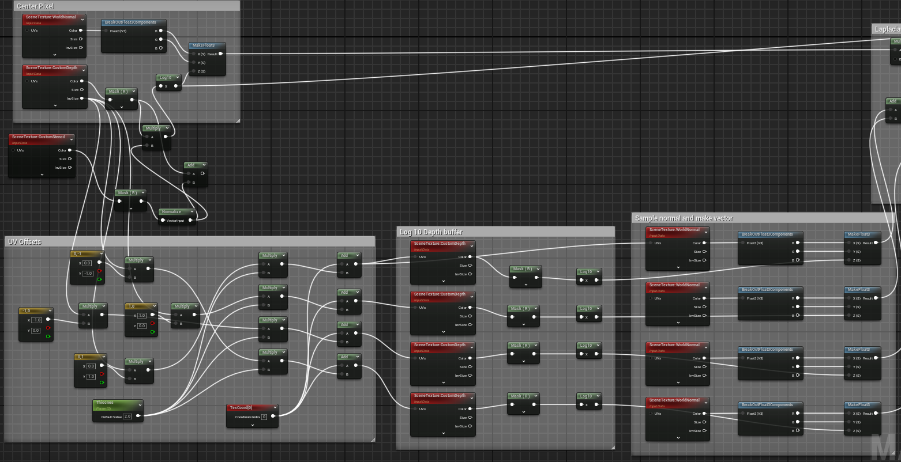
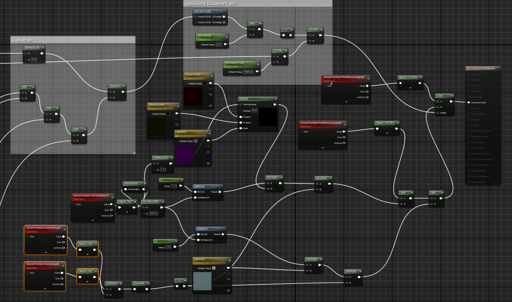
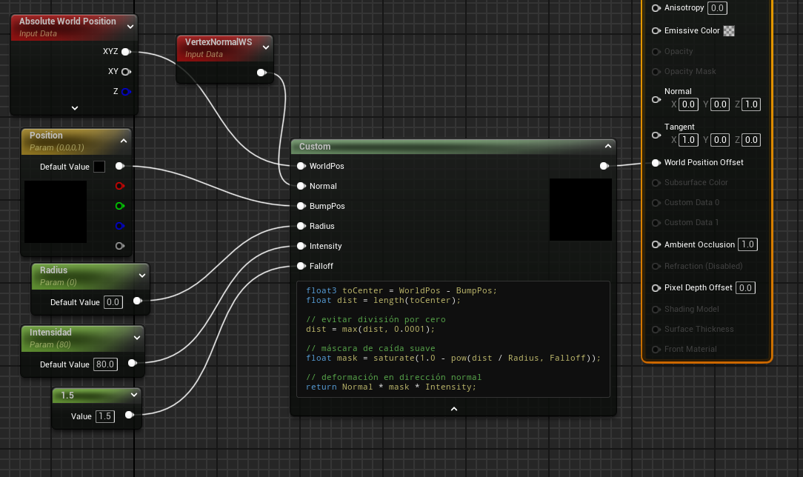

Gameplay
- Turrets, hull breaches, mailbox movement, respawn
- Player and bot animation systems, emote wheel
Drunken Duck Co. · Out now on Steam
Co-op chaos in space. My first published game, two years in the making.
Underpacked! is a third-person co-op game by the Spanish studio Drunken Duck Co. Cartoon looks, satirical humor and frantic time management: deliver packages across a ship that is falling apart, together with your crew.
It began as a student team project (UCM and Voxel School) that grew into the studio, then into a full production and finally a released game, after about two years of development.
Built in Unreal Engine with FMOD for audio. I also built 5 of its levels, from layout to final pass.
I worked across six areas, from the first prototype to the final build.
Some of the systems behind the game. Open the details to see how they are built.
Interactable objects glow with illuminated borders and guiding arrows, so the next action reads at a glance.


Designers build and edit package tubes in real time. Two custom vertex-animated materials show the tube and its direction, with VFX and SFX on every entry and exit.

Code-driven tweens give every machine clear feedback on each interaction, plus VFX that communicate its status.
Explosions, electricity, fire, smoke and package effects, built to stay readable and cheap in a chaotic co-op scene.
A UI marker travels across the screen toward the mailbox that needs a delivery, in the right color, so eyes stay on the action.
Each destination is a live 3D planet. A reusable way to render 3D objects inside the UI lets planets rotate, light up and react to selection.
A post-process effect fires when the player is hit, so damage reads instantly in the middle of the chaos.
Five levels for the final game: layout, gameplay setup, lighting, VFX and audio, then iteration after playtests.